Meera is 22 and reached her Airbnb at 1:45 AM with three friends after an overnight bus. The door code didn’t work, the host was asleep and her phone was at 8%. Afterwards she summed up the night in one line.
“Check-in shouldn’t fall apart when you arrive late with bad network.”
This case study looks at what Airbnb gives a guest in that exact moment. I tried to get help in the app the way Meera would have, worked out where it let her down and then designed what should happen instead.
Overnight busFour friends
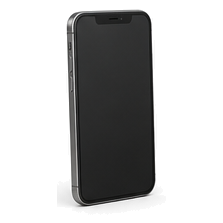
8% batteryOne bar of signal
Details in an emailSomewhere
Code failsKeypad blinks red
Host asleepNo answer
Four in the coldNobody to turn to
Where does the app send you when you’re locked out?
I opened the app on one of my own bookings and tried to get help the way Meera would have, standing at that gate with a dying phone. I found four ways to look for help and none of them starts from a part of the app made for check-in.
~26 minspent trying all four
150+loosely matched articles upon search
Route 1
Search the Help Centre
152 loosely matched articles, and the closest ones end with “contact customer service”.
Route 2
Open the trip
The check-in tile isn’t tappable, the details sit in the host chat and the stay page ends at support.
Route 3
Contact support
On weak signal the message failed, and the reply pointed to a button that isn’t there.
Route 4
Try again
Every attempt opens a new thread that forgets the last one. Six threads for one trip.
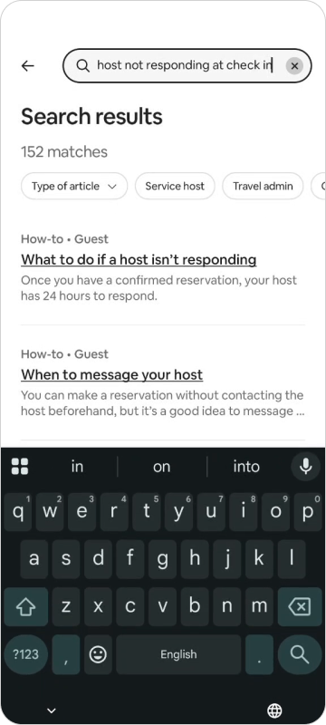
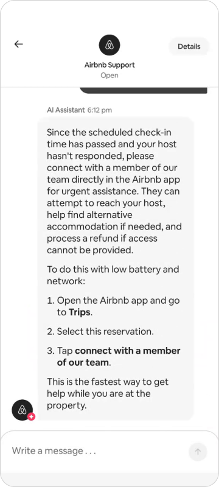
Moving forward
Through this walkthrough it was clear that help was there, but it was scattered everywhere with multiple entry points. In a situation like ours, with low battery and bad network, it would be extremely difficult to figure out what to do in the panic. This made it clear that we need a flow that ensures entry and provides adequate support at the right time, without the user going back and forth.
See all four flows, screen by screen
Route 1
Search the Help Centre
Profile
Get help
Help Centre
Search
General articles
I searched for Meera’s situation in my own words. The 152 articles that came back weren’t filtered to it, and the closest ones were general advice that ended with “contact customer service”. Nothing spoke to the moment of check-in, which is where a guest like Meera gives up on it.
Help sits under Profile152 loosely matched articles
Nothing about check-in
Route 2
Open the trip
Trips
Your trip
Check-in
Your stay
Help Centre or support
The check-in tile looks like a button but doesn’t open anything. My details had come by text in the chat with the host, and messaging or calling the host only helps if they answer and have shared a number. The full stay page shows a check-in time and no details, since those only appear about 48 hours before arrival, and at the bottom everything leads to the Help Centre or support.
The check-in tile isn’t tappable
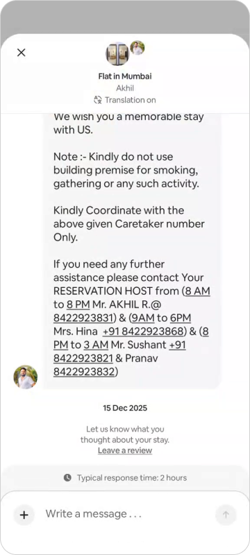
Details sent by text in the host chat
The stay page ends at support
Route 3
Contact support
Your stay
Contact support
AI chat
Back to Trips
Support opens from the stay page with an AI assistant. On a weak signal my message sat on “Sending” and then failed, and the reply that did arrive sent me back to the Trips page to tap “connect with a member of our team”, a button that isn’t there.
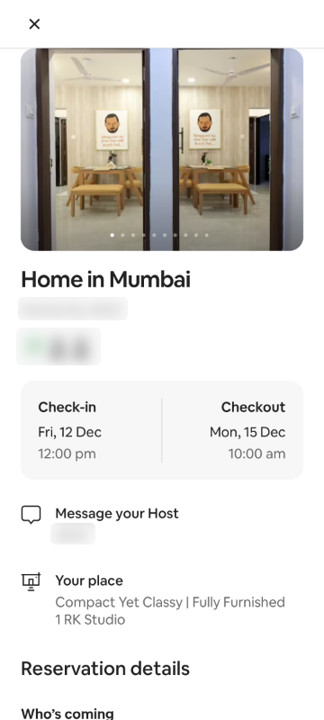
The stay page
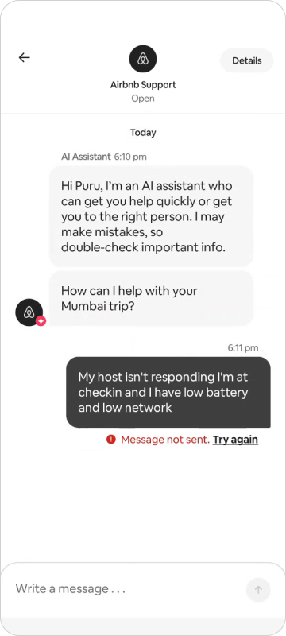
The message I sentSent back to Trips, with no button to tap
Route 4
Try again
Support again
New AI chat
Messages
No button here
Every attempt opens a new thread that forgets the last one. One thread offers to connect her with a team member but there is nothing to tap.
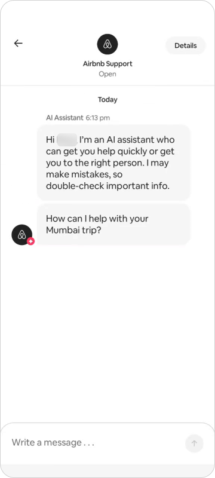
A fresh chat every time
Six threads for one trip
Airbnb’s own help page says to contact them if the host hasn’t replied within “a reasonable time”.
The question becomes
“What is this reasonable time at 1:45 AM?”
I couldn’t change the wait itself, but I could change the waiting. A wait feels endless when nothing tells you what is happening, so that question became the premise of the design.
How might we
Turn a silent, failed late-night check-in into a guided, time-boxed path where Meera always knows the next step, and within ten minutes of asking for help is inside, or knows her group is safe and has a stay for the night?
What do others do better?
Most products that cover the failure states do it with something only the guest benefits from, like a person on call all night or a free room for anyone who asks. Three ideas kept coming up across all of them: a clock, a record of what was tried, and one door to a human. I aimed for the top right, covering failures in a way that stays fair to the host and the business.
What the others do better
TuroA 30 minute clock, so a guest knows exactly when to escalate.
VrboSupport contacts the host on the guest’s behalf.
HotelsWhen a room can’t be honoured they book you elsewhere and pay the first night.
UberOne visible safety button that reaches a live agent.
Booking.comTries to find an alternative, but the guest still does the chasing.
Smart locksCertain, but only for the few hosts who own one.
Five questions the night asks
Before drawing any screen, I turned the night into five questions. Every idea had to answer one of them.
Can we reassure Meera right away that someone is already working on it?
Can that still work at 8% with one bar of signal, and what are the backups if it doesn’t?
If the host can’t be reached, can we stop her wasting effort and go straight to what still helps?
Can she have a real option for the night by minute ten?
And what about the three people standing next to her?
It was then taking some shape
After the ideation against those five questions, there was a fallback system I could imagine happening, which I mapped below. I tried to take care of aspects like safety, backups, how much the company can do from its end and what the user needs in the moment.
Final design
Peers walked through the first version on a phone, thinking out loud. They said it felt like someone was handling things, and four moments got in the way. Each path below starts with the first version, shows where it broke and ends on final design V2.
The way most lockouts end. The host wakes up and sends a way in.
First version
1:45 AM, she opens her trip
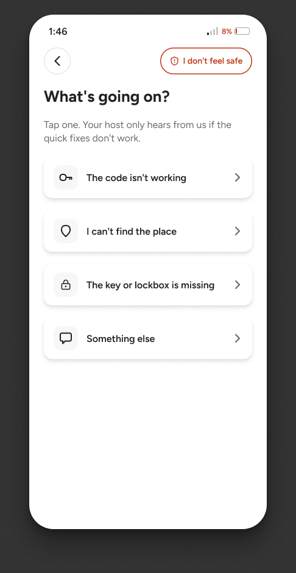
The code fails, she taps for help
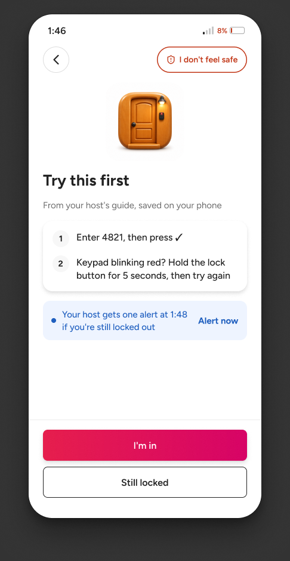
She tries the host’s quick fixes
Still locked, the app rings her host 1
Her host wakes to an alert
The host replies with a way in 2
A lockbox code arrives in chat
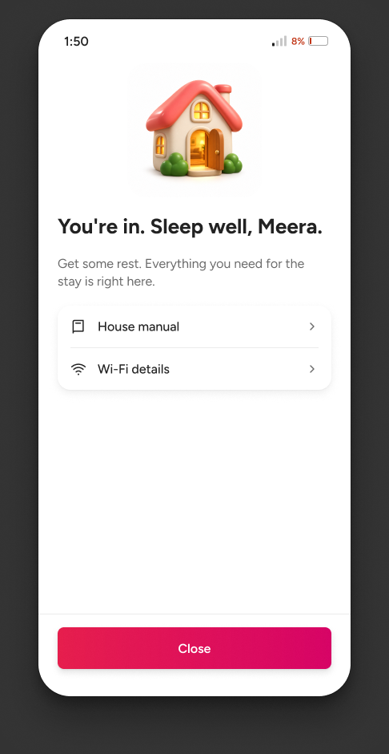
She’s in for the night
What testing showed
First version
1
“It feels like a long onboarding.”
Every step on one screen made the wait feel longer, and a list of stages while time is running out reads as a countdown that causes panic instead of reassuring her. Each wait is now one full-screen step, and the co-host is tried before the host.
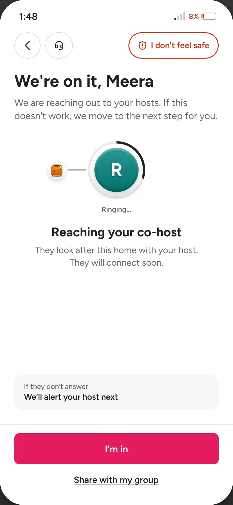
After testing
First version
2
“I didn’t know those were chats.”
The bubbles didn’t read as people. A reply now lands as a message card on the step and opens the chat, and support is a headset beside back.
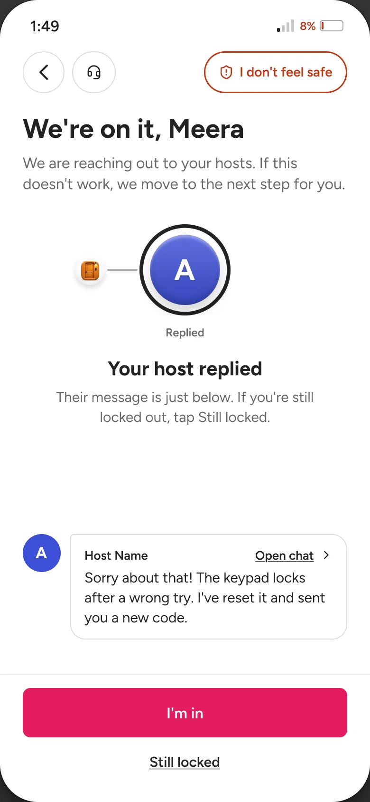
After testing
Final design V2
Trip today
The code gets its own card.
The door code sits on the trip with “Trouble getting in?” right under it, saved on the phone so it opens with no signal.
What’s going on?
One tap names the problem.
Nothing to type at the gate. From here on, support is one tap away beside back.
Let’s get you in
Quick fixes for this check-in.
Two fixes picked for the check-in type the host set up, here a keypad, solve most lockouts in a minute. Nothing is loading yet because it is her turn, and “Still locked” moves the case on so Meera never has to decide who to wake.
Reaching your co-host, then host 1
Reaching out to the co-host and the host.
One step on screen, and only the next one is named. The co-host is tried first, and if they don’t pick up the host is alerted on the same screen, where only the face in the ring changes so nothing shifts under her while she waits.
The host’s phone
The host gets an alert.
The host gets a single alert. Opened, it offers a quick reply first, then a call, then “On my way” in one tap.
Seen
The ring closes when the host opens it.
A typing bubble fills the wait, so the silence reads as someone writing back.
Your host replied 2
The reply lands where she is already looking.
A message card with “Open chat” sits above the buttons on the same screen, so there is no inbox to dig through.
The chat
A fresh code that disappears.
The host resets the keypad and sends a new code that clears once she’s in. “I’m in” and “Still locked” answer without typing.
You’re in
A warm ending.
The last screen points forward to the house manual and the Wi-Fi, since people remember how a night ends more than its middle.
One bar of signal at 8% battery, where any request can stall.
First version
One bar of signal, so the request waits 4
Two minutes on, it goes by text
What testing showed
First version
4
“Will this work on bad network?”
The request now queues with a loading bar while calls, 112 and a group link appear on their own. After two minutes it goes as a text.
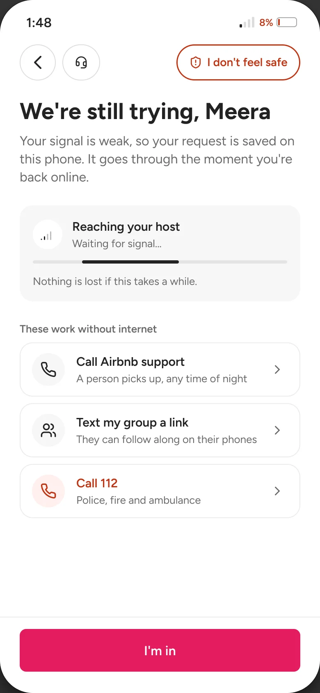
After testing
Final design V2
We’re still trying 4
The request waits on the phone.
A light card with a loading bar shows it is still trying. Calling support, texting the group and 112 work without internet, so they appear on their own.
Sent by text 4
After two minutes it goes as a text.
The alert leaves by SMS with nothing for her to do. If the group hasn’t heard from her, Airbnb calls to check in.
Design reviews with peers caught six smaller details that quietly broke trust, from a timer that read as a promise to photos that felt staged. Each one was fixed in the final screens.
Who pays for this, and what stops someone abusing it?
Each generous moment is tied to something the system can check, so “can’t get in” never becomes a free refund button.
Checked before anything generous happens
A stay only appears after logged attemptsSomeone who isn’t at the door can’t produce an alert, a call and a wait, so there is nothing to tap through to a free night.
Codes expire and every reveal is loggedA screenshot or a lost phone can’t open the door the next day.
The host’s payout is held and not cutLocks fail in ways nobody predicts, so the host is reviewed fairly instead of penalised automatically.
The group link sees one case onlyIt expires, Meera can end it at any time and it never shows payment or personal details.
Text messages only during an active lockoutThat keeps the cost of SMS small and tied to a real case.
Refunds handed out at the gate0
Already exists
AirCover and its check-in rules
Host and co-host contacts on every booking
Messaging and push notifications
Night support and its queue
Trip details shown before arrival
New
A case with an attempt log
One-tap problem choices
Lock screen replies for the host
Requests that wait for signal and send themselves
A web link for the group
Replies and fallbacks on one status screen
One lockout, four sides to it
How I thought about each person the night touches, and what the design does for them.
1:45 AMa door that won’t open
Meera and friends
Catered to mainly by showing them the support and help on offer, so at every step they can see someone is on it.
The host
Ringing them again and again is pointless, so they are rung once and Airbnb helps on their behalf, which keeps the chance of it escalating low.
Night support
Support arrives with the full context, so there is less back and forth and less time before someone acts.
Airbnb
Fewer bad nights and low ratings, without offering refunds outright.
Assumptions, and what still works if everything fails
What I took as given about Airbnb’s side, and what Meera still has when signal, battery and replies all run out.
The trip and its check-in details are saved on the phone once Meera has opened them before she travels.
AirCover covers a night like this. The amount stays off the screen because nobody should be weighing prices at the gate.
Airbnb can move the booking to a nearby stay using the details it already has, with no new checkout.
An alert only rings through the host’s Do Not Disturb if they allowed it, so it is designed for a phone that is simply on silent.
If there’s no signal, no battery and no answer yet
Saved on the phone. The safety line, the booking and the nearest place open all night work with zero signal.
Kept by Airbnb. The case keeps running on Airbnb’s side, so whoever reaches out next picks up where it stopped, from any phone.
The process followed
From a walkthrough of the app as it is today to a working prototype, with peer testing in the middle shaping the second version.


 Vrbo
Vrbo
 Uber
Uber